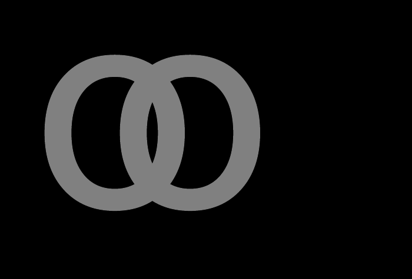
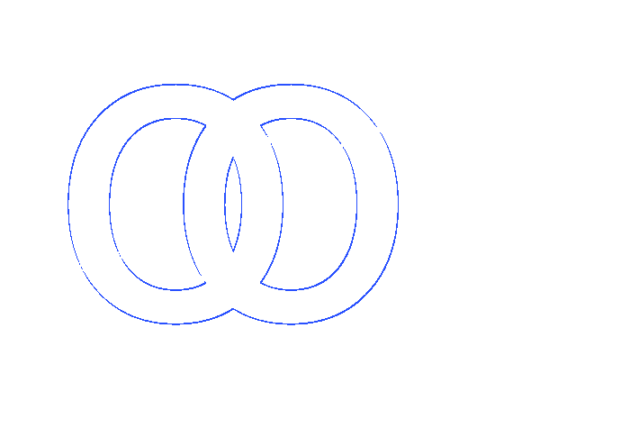

REFERENCE-DISPUTED 3804 px · above-floor 1.09% · raw 1.14% max-page diff opacity-text-glyph-group · text-group · REFERENCE DISPUTEDAntialiasCoverageΔE 17.9


why: above-floor complete-page mismatch 1.090827% exceeds 1.0% PASS ceiling; visually accepted coverage phase; raw antialiasing coverage residue on a shared outline
Overlapping glyphs in one opacity:.5 element flatten before compositing; catches per-glyph alpha drawing where overlaps become too bright.
reference dispute: Both PDFs are rasterized by the same pinned pdftoppm command. Ironpress composites the overlapping glyphs as one opacity group: its fully painted glyph colour is the same #808080 as Chrome's (52,577 versus 52,595 pixels), so the overlap is not brightened by per-glyph alpha. The remaining raw diff is a one-device-pixel contour residue. The Ironpress PDF embeds ParitySans as CID TrueType while Chrome's PDF uses Type 3, so their PDF glyph programs produce slightly different edge coverage in that shared rasterization. This does not indicate missing opacity-group support; raw evidence remains reported.
regions (63 total; showing 63 representatives)
Complete dominant-class aggregates
| class | regions | pixels | union bbox (CSS px) | largest px | maximum magnitude |
|---|---|---|---|---|---|
| ColorErr | 63 | 3804 | 24,30 → 141,115 | 900 | total 1.1% · largest 0.3% |
Representative region details (worst-first)
| class | bbox (CSS px) | area% | magnitude | reason |
|---|---|---|---|---|
| AntialiasCoverage | 33,53 → 141,115 | 0.3 | ΔRGB(62,62,62) | antialiasing coverage residue on a shared outline |
| AntialiasCoverage | 24,30 → 131,88 | 0.3 | ΔRGB(-55,-55,-55) | antialiasing coverage residue on a shared outline |
| AntialiasCoverage | 39,42 → 73,91 | 0.2 | ΔRGB(12,12,12) | antialiasing coverage residue on a shared outline |
| AntialiasCoverage | 92,57 → 127,103 | 0.2 | ΔRGB(-23,-23,-23) | antialiasing coverage residue on a shared outline |
| AntialiasCoverage | 80,56 → 86,89 | 0.09 | ΔRGB(16,16,16) | antialiasing coverage residue on a shared outline |
| AntialiasCoverage | 45,95 → 73,103 | 0.05 | ΔRGB(-45,-45,-45) | antialiasing coverage residue on a shared outline |
| AntialiasCoverage | 92,42 → 120,50 | 0.05 | ΔRGB(54,54,54) | antialiasing coverage residue on a shared outline |
| AntialiasCoverage | 97,53 → 98,57 | 0.004511 | ΔRGB(19,19,19) | antialiasing coverage residue on a shared outline |
| AntialiasCoverage | 124,55 → 124,58 | 0.003910 | ΔRGB(-24,-24,-24) | antialiasing coverage residue on a shared outline |
| AntialiasCoverage | 68,91 → 69,94 | 0.003910 | ΔRGB(-24,-24,-24) | antialiasing coverage residue on a shared outline |
| AntialiasCoverage | 26,88 → 27,91 | 0.003308 | ΔRGB(-19,-19,-19) | antialiasing coverage residue on a shared outline |
| AntialiasCoverage | 132,42 → 132,43 | 0.002406 | ΔRGB(-11,-11,-11) | antialiasing coverage residue on a shared outline |
| AntialiasCoverage | 84,58 → 84,60 | 0.002406 | ΔRGB(-22,-22,-22) | antialiasing coverage residue on a shared outline |
| AntialiasCoverage | 94,47 → 95,48 | 0.001805 | ΔRGB(-7,-7,-7) | antialiasing coverage residue on a shared outline |
| AntialiasCoverage | 138,52 → 138,53 | 0.001805 | ΔRGB(31,31,31) | antialiasing coverage residue on a shared outline |
| AntialiasCoverage | 83,57 → 84,58 | 0.001805 | ΔRGB(-14,-14,-14) | antialiasing coverage residue on a shared outline |
| AntialiasCoverage | 44,94 → 45,95 | 0.001805 | ΔRGB(-17,-17,-17) | antialiasing coverage residue on a shared outline |
| AntialiasCoverage | 32,100 → 33,101 | 0.001805 | ΔRGB(22,22,22) | antialiasing coverage residue on a shared outline |
| AntialiasCoverage | 137,50 → 137,51 | 0.001504 | ΔRGB(22,22,22) | antialiasing coverage residue on a shared outline |
| AntialiasCoverage | 97,52 → 97,53 | 0.001504 | ΔRGB(11,11,11) | antialiasing coverage residue on a shared outline |
| AntialiasCoverage | 28,92 → 28,93 | 0.001504 | ΔRGB(-11,-11,-11) | antialiasing coverage residue on a shared outline |
| AntialiasCoverage | 30,97 → 30,98 | 0.001504 | ΔRGB(11,11,11) | antialiasing coverage residue on a shared outline |
| AntialiasCoverage | 133,44 → 133,44 | 0.001203 | ΔRGB(-12,-12,-12) | antialiasing coverage residue on a shared outline |
| AntialiasCoverage | 93,46 → 94,46 | 0.001203 | ΔRGB(-11,-11,-11) | antialiasing coverage residue on a shared outline |
| AntialiasCoverage | 121,50 → 121,51 | 0.001203 | ΔRGB(11,11,11) | antialiasing coverage residue on a shared outline |
| AntialiasCoverage | 42,88 → 42,89 | 0.001203 | ΔRGB(10,10,10) | antialiasing coverage residue on a shared outline |
| AntialiasCoverage | 44,93 → 44,93 | 0.001203 | ΔRGB(-12,-12,-12) | antialiasing coverage residue on a shared outline |
| AntialiasCoverage | 31,98 → 31,99 | 0.001203 | ΔRGB(20,20,20) | antialiasing coverage residue on a shared outline |
| AntialiasCoverage | 31,99 → 32,100 | 0.001203 | ΔRGB(21,21,21) | antialiasing coverage residue on a shared outline |
| AntialiasCoverage | 27,91 → 27,92 | 0.000902 | ΔRGB(-11,-11,-11) | antialiasing coverage residue on a shared outline |
| AntialiasCoverage | 136,48 → 136,48 | 0.000602 | ΔRGB(20,20,20) | antialiasing coverage residue on a shared outline |
| AntialiasCoverage | 136,48 → 136,49 | 0.000602 | ΔRGB(22,22,22) | antialiasing coverage residue on a shared outline |
| AntialiasCoverage | 136,49 → 136,49 | 0.000602 | ΔRGB(22,22,22) | antialiasing coverage residue on a shared outline |
| AntialiasCoverage | 96,51 → 96,51 | 0.000602 | ΔRGB(10,10,10) | antialiasing coverage residue on a shared outline |
| AntialiasCoverage | 137,51 → 137,51 | 0.000602 | ΔRGB(42,42,42) | antialiasing coverage residue on a shared outline |
| AntialiasCoverage | 122,52 → 122,52 | 0.000602 | ΔRGB(-4,-4,-4) | antialiasing coverage residue on a shared outline |
| AntialiasCoverage | 123,53 → 123,53 | 0.000602 | ΔRGB(-11,-11,-11) | antialiasing coverage residue on a shared outline |
| AntialiasCoverage | 123,54 → 123,54 | 0.000602 | ΔRGB(-12,-12,-12) | antialiasing coverage residue on a shared outline |
| AntialiasCoverage | 123,54 → 123,55 | 0.000602 | ΔRGB(-24,-24,-24) | antialiasing coverage residue on a shared outline |
| AntialiasCoverage | 43,91 → 43,91 | 0.000602 | ΔRGB(-7,-7,-7) | antialiasing coverage residue on a shared outline |
| AntialiasCoverage | 44,92 → 44,92 | 0.000602 | ΔRGB(-10,-10,-10) | antialiasing coverage residue on a shared outline |
| AntialiasCoverage | 28,93 → 28,94 | 0.000602 | ΔRGB(-5,-5,-5) | antialiasing coverage residue on a shared outline |
| AntialiasCoverage | 69,94 → 69,94 | 0.000602 | ΔRGB(-10,-10,-10) | antialiasing coverage residue on a shared outline |
| AntialiasCoverage | 29,95 → 29,95 | 0.000602 | ΔRGB(-7,-7,-7) | antialiasing coverage residue on a shared outline |
| AntialiasCoverage | 70,95 → 70,95 | 0.000602 | ΔRGB(-24,-24,-24) | antialiasing coverage residue on a shared outline |
| AntialiasCoverage | 70,95 → 70,96 | 0.000602 | ΔRGB(-10,-10,-10) | antialiasing coverage residue on a shared outline |
| AntialiasCoverage | 70,96 → 70,96 | 0.000602 | ΔRGB(-5,-5,-5) | antialiasing coverage residue on a shared outline |
| AntialiasCoverage | 71,97 → 71,97 | 0.000602 | ΔRGB(-4,-4,-4) | antialiasing coverage residue on a shared outline |
| AntialiasCoverage | 131,42 → 131,42 | 0.000301 | ΔRGB(-33,-33,-33) | antialiasing coverage residue on a shared outline |
| AntialiasCoverage | 133,44 → 133,44 | 0.000301 | ΔRGB(-10,-10,-10) | antialiasing coverage residue on a shared outline |
| AntialiasCoverage | 134,45 → 134,45 | 0.000301 | ΔRGB(-14,-14,-14) | antialiasing coverage residue on a shared outline |
| AntialiasCoverage | 135,47 → 135,47 | 0.000301 | ΔRGB(11,11,11) | antialiasing coverage residue on a shared outline |
| AntialiasCoverage | 135,47 → 135,47 | 0.000301 | ΔRGB(9,9,9) | antialiasing coverage residue on a shared outline |
| AntialiasCoverage | 95,48 → 95,48 | 0.000301 | ΔRGB(-10,-10,-10) | antialiasing coverage residue on a shared outline |
| AntialiasCoverage | 120,50 → 120,50 | 0.000301 | ΔRGB(26,26,26) | antialiasing coverage residue on a shared outline |
| AntialiasCoverage | 122,53 → 122,53 | 0.000301 | ΔRGB(-8,-8,-8) | antialiasing coverage residue on a shared outline |
| AntialiasCoverage | 42,90 → 42,90 | 0.000301 | ΔRGB(15,15,15) | antialiasing coverage residue on a shared outline |
| AntialiasCoverage | 43,92 → 43,92 | 0.000301 | ΔRGB(-18,-18,-18) | antialiasing coverage residue on a shared outline |
| AntialiasCoverage | 29,95 → 29,95 | 0.000301 | ΔRGB(22,22,22) | antialiasing coverage residue on a shared outline |
| AntialiasCoverage | 29,96 → 29,96 | 0.000301 | ΔRGB(5,5,5) | antialiasing coverage residue on a shared outline |
| AntialiasCoverage | 30,97 → 30,97 | 0.000301 | ΔRGB(10,10,10) | antialiasing coverage residue on a shared outline |
| AntialiasCoverage | 71,97 → 71,97 | 0.000301 | ΔRGB(-8,-8,-8) | antialiasing coverage residue on a shared outline |
| AntialiasCoverage | 71,98 → 71,98 | 0.000301 | ΔRGB(-11,-11,-11) | antialiasing coverage residue on a shared outline |
source · cases/color-opacity/opacity-text-glyph-group.html
1<!DOCTYPE html>
2<html lang="en">
3<head>
4<meta charset="utf-8">
5<title>opacity text glyph group</title>
6<style>
7 @page { size: 224px 152px; margin: 0; }
8 html { font-family: ParitySans; line-height: 1.5; }
9 * { margin: 0; box-sizing: border-box; }
10 html, body { background: #000000; }
11 .stage {
12 width: 220px;
13 height: 150px;
14 overflow: hidden;
15 background: #000000;
16 }
17 .glyphs {
18 width: 220px;
19 height: 150px;
20 padding-left: 20px;
21 color: #ffffff;
22 opacity: 0.5;
23 font-size: 108px;
24 font-weight: 700;
25 line-height: 150px;
26 letter-spacing: -44px;
27 white-space: nowrap;
28 }
29</style>
30</head>
31<body>
32 <div class="stage"><div class="glyphs">OO</div></div>
33</body>
34</html>